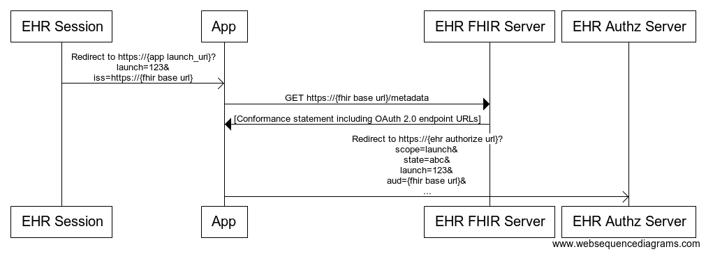

Introduction
This tutorial will walk you through creating an app in Cerner’s SMART on FHIR ecosystem.
After completing this tutorial you will know how to:
- Create a basic SMART on FHIR app.
- Self register an app with Cerner.
- Run an app in Cerner’s SMART on FHIR sandbox.
- Self register an app with SMART Health IT.
- Run an app in SMART Health IT Sandbox.
- Setup a standalone patient access app.
Prerequisites
- A public GitHub account
Project Setup
First, you’ll want to fork this tutorial from smart-on-fhir-tutorial to your GitHub account.
The smart-on-fhir-tutorial/source/example-smart-app folder contains the example SMART app which you’ll be using throughout this tutorial. Let’s take a look at some of the notable files contained within:
fhir-client.js
Located in the lib folder, this is a version of fhir-client.js which is an open source library designed to assist with calling a FHIR API and handling the SMART on FHIR authorization workflow. This tutorial uses this library when walking you through building your first SMART app.
Additional documentation on fhir-client.js can be found here.
launch.html
launch.html is the SMART app’s initial entry point and in a real production environment, would be invoked by the application launching your SMART app (for instance, the EHR or patient portal). In the SMART documentation, this is your app’s “launch URL”. In this tutorial, this page will be invoked when you launch your app from Cerner’s code console.
As the entry point into your SMART app, this page will kick-off the SMART authorization workflow.
launch-patient.html
Similar to the launch.html above, this file is the entry point when launching a standalone patient application. This file was created for convenience factor. In production, you may want to create a separate app for patient facing vs provider facing version of the app. More info on this in Standalone App Launch for Patient Access Workflow section.
launch-smart-sandbox.html
This is a clone of the launch.html above. This file was created for convenience factor to allow you to use the same app to configure it against the SMART Health IT Sandbox. More info on this in Run your app against SMART Health IT Sandbox section.
index.html
This page will be invoked via redirect from the Authorization server at the conclusion of the SMART authorization workflow. When this page is invoked, your SMART app will have everything it needs to run and access the FHIR API.
The other content you see in the source folder is the site for this tutorial. We used Slate to create the documentation for this tutorial.
GitHub Pages
index.html
<!DOCTYPE html>
<html>
<head>
<meta http-equiv='X-UA-Compatible' content='IE=edge' />
<meta http-equiv='Content-Type' content='text/html; charset=utf-8' />
<title>[YOUR-USERNAME] Example-SMART-App</title>
...
Go to your GitHub account, select Repositories tab and select smart-on-fhir-tutorial repo. Select Branch button and switch to gh-pages branch. Directly edit
/example-smart-app/index.htmlby clicking on the pencil icon. Once done with the change, commit directly to gh-pages branch.The SMART app will be available at:
https://<gh-username>.github.io/smart-on-fhir-tutorial/example-smart-app/
Health check
https://<gh-username>.github.io/smart-on-fhir-tutorial/example-smart-app/health
For the purposes of this tutorial we will be hosting our SMART app through GitHub Pages. GitHub Pages is a convenient way to host static or client rendered web sites.
Setting up GitHub pages is easy, so easy in fact that it’s already done for you. GitHub pages works by hosting content from a gh-pages branch. Since you forked the tutorial, the gh-pages branch has already been created, however GitHub won’t publish your site until you make a change to the gh-pages branch, so let’s make a change. Modify the index.html page to include your GitHub user-name in the title, and commit directly to gh-pages branch.
Use GitHub UI to directly edit index.html. Simply switch the branch to gh-pages, navigate to /example-smart-app/index.html and click the pencil icon. Commit your changes to deploy.
Once the app has been redeployed go to https://<gh-username>.github.io/smart-on-fhir-tutorial/example-smart-app/health to ensure your app is available.
Registration
Now that we have a deployed SMART app, let’s register it to access Cerner’s FHIR resources. We have created a self registration console to allow any developer to be able run a SMART app against our development environment. Navigate to our code console, if you don’t have a Cerner Care Account, go ahead and sign up for one (it’s free!). Once logged into the console, click on the “+ New App” button in the top right toolbar and fill in the following details:
| Field | Description |
|---|---|
| App Name | My amazing SMART app Any name will do. |
| SMART Launch URI | https://<gh-username>.github.io/smart-on-fhir-tutorial/example-smart-app/launch.html |
| Redirect URI | https://<gh-username>.github.io/smart-on-fhir-tutorial/example-smart-app/ |
| App Type | Provider Provider facing app |
| FHIR Spec | dstu2 The latest spec version supported by Cerner. |
| Authorized | Yes Authorized App will go through secured OAuth 2 login. |
| Standard Scopes | These scopes are required to launch the SMART app. |
| User Scopes | None |
| Patient Scopes | Locate the Patient Scopes table and select the Patient read and Observation read scopes. |
Click “Register” to complete the process. This will add the app to your account and create a client id for app authorization.
The new OAuth 2 client id will be displayed in a banner at the top of the page and can be viewed at any time by clicking on the application icon to view more details.
App Launch
Provider App
We have now created our own SMART app and registered that app with Cerner to access the FHIR resources. Before we continue on with the next steps, let’s take a moment to talk about the flow of a SMART app launch.
The SMART app launch flow begins with the EHR. Through some method, a user has indicated that they wish to launch a smart application. The EHR redirects to the SMART Launch URI that was registered above.
In this example Launch URI is launch.html. launch.html redirects to the FHIR authorization server which in-turn redirects to the Redirect URI, index.html, upon a successful authentication.
Post-authentication, index.html exchanges the returned authorization token for an access token and is then able to request resources from the FHIR server. Let’s take a deeper look at launch.html and get it ready for authentication. For more information about the SMART app launching vist the SMART Health IT site.

EHR App Launch Flow - Full size image here
{kind=link}
Patient App
Unlike the EHR app launch flow above, the standalone patient app does not need to be launched by an EHR. Cerner currently supports only the patient standalone launch at the moment. You can learn more about the standalone launch at SMART Health IT site.
There are a few minor differences:
- Patients can launch any standalone app
- App provides the iss param of the FHIR server
- App can request launch/patient scope to obtain a patient in context
More information on how to configure a patient standalone app can be found in Standalone App Launch for Patient Access Workflow section below.

Patient App Launch Flow - Full size image here
Request Authorization
launch.html
<!DOCTYPE html>
<html lang="en">
<head>
<meta http-equiv="Content-Type" content="text/html; charset=utf-8" />
<meta http-equiv="X-UA-Compatible" content="IE=edge" />
<title>Example-SMART-App</title>
</head>
Loading...
<body>
<script src='./lib/fhir-client-v0.1.11.js'></script>
<!-- Prevent session bleed caused by single threaded embedded browser and sessionStorage API -->
<!-- https://github.com/cerner/fhir-client-cerner-additions -->
<script src='./lib/fhir-client-cerner-additions-1.0.0.js'></script>
<script>
FHIR.oauth2.authorize({
'client_id': '<enter your client id here>',
'scope': 'patient/Patient.read patient/Observation.read launch online_access openid profile'
});
</script>
</body>
</html>
Make sure to replace CLIENT_ID with the client id provided in code console and redeploy your site.
The responsibility of launch.html is to redirect to the appropriate FHIR authorization server. As you can see in the code, fhir-client makes our job pretty easy. All we have to do is call FHIR.oauth2.authorize and supply the client_id generated by the code console during registration and the scopes we registered.
The client_id is found in the app details page that can be accessed by clicking on the application icon in the code console. Copy the client_id into the authorize call in launch.html, commit the changes back to your repo and redeploy your site.
For the purposed of this tutorial you don’t need to modify the scopes. This list should match the scopes that you registered the application with.
Below is some additional information about the scopes we’ve selected for our app.
| Scope | Grants |
|---|---|
| patient/Patient.read | Permission to read Patient resource for the current patient. |
| patient/Observation.read | Permission to read Observation resource for the current patient. |
| openid, profile | Permission to retrieve information about the current logged-in user. Required for EHR launch. |
| launch | Permission to obtain launch context when app is launched from an EHR. Required for EHR launch. |
| launch/patient | Permission to have a patient be selected when performing a patient facing standalone launch. Required ONLY for patient standalone launch. Apps can choose to use user/Patient.read or user/Observation.read scopes and wouldn’t need launch scope at all. See this section: Standalone App Launch for Patient Access Workflow. |
| online_access | Request a refresh_token that can be used to obtain a new access token to replace an expired one, and that will be usable for as long as the end-user remains online. Required for EHR launch. |
For our app we will use Patient.read, Observation.read. We will always include launch, online_access, openid & profile scopes to our app.
So just what exactly is the FHIR.oauth2.authorize method doing?
Through an EHR launch, launch.html will be supplied with two query params iss and launch
iss is the EHR’s FHIR end point and launch is an identifier that will be passed along to the authorization server.
FHIR.oauth2.authorize queries the FHIR endpoint to find the URI for authorization.
It then simply redirects to that endpoint, filling out the required API which includes the supplied client_id, scopes and the launch parameter passed in from the EHR. (There are a few more params that can be read about here). Additionally the function generates an appropriate state parameter that will then be checked after redirecting to the index page.
Following the FHIR.oauth2.authorize, the app will redirect to the authorization server, which, on a successful authorization, will redirect back to the Redirect URI, in this case, index.html
Access Token Retrieval
index.html
...
<script src='./lib/es6-shim-0.35.1.min.js'></script>
<script src='./src/js/example-smart-app.js'></script>
<script src='./lib/fhir-client-v0.1.11.js'></script>
<!-- Prevent session bleed caused by single threaded embedded browser and sessionStorage API -->
<!-- https://github.com/cerner/fhir-client-cerner-additions -->
<script src='./lib/fhir-client-cerner-additions-1.0.0.js'></script>
<script src="https://ajax.googleapis.com/ajax/libs/jquery/1.12.4/jquery.min.js"></script>
<script>
extractData().then(
//Display Patient Demographics and Observations if extractData was success
function(p) {
drawVisualization(p);
},
//Display 'Failed to call FHIR Service' if extractData failed
function() {
$('#errors').html('<p> Failed to call FHIR Service </p>');
}
);
</script>
...
example-smart-app.js - extractData
...
window.extractData = function() {
var ret = $.Deferred();
...
...
FHIR.oauth2.ready(onReady, onError);
return ret.promise();
};
Now that the app has successfully been authenticated, it’s time to call a FHIR resource, but first we need to obtain an OAuth2 access token. We have an authorization code that was passed as a query param to the redirect URI (index.html) by the authorization server. The authorization code is exchanged for an access token through POST to the authorization server. Again, fhir-client.js makes this easy for us.
The index.html file includes a script which calls into the extractData function in example-smart-app.js.
extractData uses the FHIR.oauth2.ready() function to exchange the authorization code for the access token and stores it in session storage for later use.
Access FHIR Resource
example-smart-app.js - onReady
...
function onReady(smart) {
if (smart.hasOwnProperty('patient')) {
var patient = smart.patient;
var pt = patient.read();
var obv = smart.patient.api.fetchAll({
type: 'Observation',
query: {
code: {
$or: ['http://loinc.org|8302-2', 'http://loinc.org|8462-4',
'http://loinc.org|8480-6', 'http://loinc.org|2085-9',
'http://loinc.org|2089-1', 'http://loinc.org|55284-4']
}
}
});
$.when(pt, obv).fail(onError);
$.when(pt, obv).done(function(patient, obv) {
var byCodes = smart.byCodes(obv, 'code');
var gender = patient.gender;
var dob = new Date(patient.birthDate);
var day = dob.getDate();
var monthIndex = dob.getMonth() + 1;
var year = dob.getFullYear();
var dobStr = monthIndex + '/' + day + '/' + year;
var fname = '';
var lname = '';
if(typeof patient.name[0] !== 'undefined') {
fname = patient.name[0].given.join(' ');
lname = patient.name[0].family.join(' ');
}
var height = byCodes('8302-2');
var systolicbp = getBloodPressureValue(byCodes('55284-4'),'8480-6');
var diastolicbp = getBloodPressureValue(byCodes('55284-4'),'8462-4');
var hdl = byCodes('2085-9');
var ldl = byCodes('2089-1');
var p = defaultPatient();
p.birthdate = dobStr;
p.gender = gender;
p.fname = fname;
p.lname = lname;
p.age = parseInt(calculateAge(dob));
if(typeof height[0] != 'undefined' && typeof height[0].valueQuantity.value != 'undefined' && typeof height[0].valueQuantity.unit != 'undefined') {
p.height = height[0].valueQuantity.value + ' ' + height[0].valueQuantity.unit;
}
if(typeof systolicbp != 'undefined') {
p.systolicbp = systolicbp;
}
if(typeof diastolicbp != 'undefined') {
p.diastolicbp = diastolicbp;
}
if(typeof hdl[0] != 'undefined' && typeof hdl[0].valueQuantity.value != 'undefined' && typeof hdl[0].valueQuantity.unit != 'undefined') {
p.hdl = hdl[0].valueQuantity.value + ' ' + hdl[0].valueQuantity.unit;
}
if(typeof ldl[0] != 'undefined' && typeof ldl[0].valueQuantity.value != 'undefined' && typeof ldl[0].valueQuantity.unit != 'undefined') {
p.ldl = ldl[0].valueQuantity.value + ' ' + ldl[0].valueQuantity.unit;
}
ret.resolve(p);
});
} else {
onError();
}
}
...
With access token in hand we’re ready to request a FHIR resource and again, we will be using fhir-client.js.
For the purposes of this tutorial we’ll be retrieving basic information about the patient and a couple of basic observations to display.
The fhir-client.js library defines several useful API’s we can use to retrieve this information.
smart.patient.read()- This will return the context for the patient the app was launched for.
smart.patient.apifetchAll()- This will use the fhir.js API to retrieve a complete set of resources for the patient in context.
Both of these functions will return a jQuery deferred object which we unpack on success.
Unpacking is fairly straight forward. We’re taking the response from the patient and observation resources and placing it into a “patient” data structure.
The last function from fhir-client.js is the byCodes utility function that returns a function to search a given resource for specific codes returned from that response.
The fhir-client.js library defines several more API’s that will come in handy while developing smart app. Read about them here.
Displaying the Resource
index.html
...
<h2>SMART on FHIR Starter App</h2>
<div id='errors'>
</div>
<div id="loading">Loading...</div>
<div id='holder' >
<h2>Patient Resource</h2>
<table>
<tr>
<th>First Name:</th>
<td id='fname'></td>
</tr>
<tr>
<th>Last Name:</th>
<td id='lname'></td>
</tr>
<tr>
<th>Gender:</th>
<td id='gender'></td>
</tr>
<tr>
<th>Date of Birth:</th>
<td id='birthdate'></td>
</tr>
<tr>
<th>Age:</th>
<td id='age'></td>
</tr>
</table>
<h2>Observation Resource</h2>
<table>
<tr>
<th>Height:</th>
<td id='height'></td>
</tr>
<tr>
<th>Systolic Blood Pressure:</th>
<td id='systolicbp'></td>
</tr>
<tr>
<th>Diastolic Blood Pressure:</th>
<td id='diastolicbp'></td>
</tr>
<tr>
<th>LDL:</th>
<td id='ldl'></td>
</tr>
<tr>
<th>HDL:</th>
<td id='hdl'></td>
</tr>
</table>
</div>
...
example-smart-app.js - drawVisualization
...
window.drawVisualization = function(p) {
$('#holder').show();
$('#loading').hide();
$('#fname').html(p.fname);
$('#lname').html(p.lname);
$('#gender').html(p.gender);
$('#birthdate').html(p.birthdate);
$('#age').html(p.age);
$('#height').html(p.height);
$('#systolicbp').html(p.systolicbp);
$('#diastolicbp').html(p.diastolicbp);
$('#ldl').html(p.ldl);
$('#hdl').html(p.hdl);
};
...
The last remaining task for our application is displaying the resource information we’ve retrieved. In index.html we define a table with several id place holders. On a success from extractData we’ll call drawVisualization which will show the table div as well as filling out the relevant sections.
Test your App
To re-deploy the GitHub Pages site, commit your changes and make sure your gh-pages branch is up to date.
Now that we have a snazzy SMART app, it’s time to test it.
Next log back into the code console and click on the app you’ve registered (My amazing SMART app). To launch your app through the code console click the “Begin Testing” button. The console will ask if the app you’re launching requires a patient in context. Our app requires a patient, so select yes and choose a patient. Please note the millennium username and password, you’ll need this credential when prompted. Finally, click launch and the console will redirect to your application.
MPages® Integration
MPages® is a Web-based platform that enables clients to create customized views of Cerner Millennium® data at the organizer or chart level from within Cerner PowerChart®, FirstNet®, INet® and SurgiNet®.
There are a few different files and HTML tags you need to add to each view within your application to securely embed the SMART App within an MPage® view. We’ve already set this up in the example app, so there’s no work needed in this step.
index.html - launch.html - health.html
<html hidden>
<head>
<meta http-equiv='X-UA-Compatible' content='IE=edge' />
...
<link rel='stylesheet' type='text/css' href='./lib/css/cerner-smart-embeddable-lib-[version].min.css'>
...
<body>
...
<script src='https://cdnjs.cloudflare.com/ajax/libs/babel-polyfill/6.26.0/polyfill.min.js'></script>
<script src='./lib/js/cerner-smart-embeddable-lib-[version].min.js'></script>
...
- Include the
hiddenattribute to thehtmltag. - Set a
metatag at the top of theheadtag to display Internet Explorer content in the highest compatibility mode. - Include the
babel-polyfillmodule into the project to support ES2015+ JavaScript standard methods and Objects that this project (and included libraries) may use. - Include the
cerner-smart-embeddable-libfiles that utilize the XFC (Cross-Frame-Container) library to prevent possible Clickjacking attacks in any browser. These files can be pulled in from the Cerner SMART Embeddable Library. See project description for how to properly size the application, and note additional considerations around conflicting HTTP headers.
Note: The steps above only ensure that the application will meet certain prerequisites to securely embed a SMART app within an MPage® view. Once these relevant files and HTML tags are included inside each view of the app, then the application should be ready for SMART in MPage® integration.
Run your app against SMART Health IT Sandbox
One of the reasons why SMART on FHIR is awesome is because of the interoperability factor! If an EHR follows the SMART and FHIR specifications, your application will work with that EHR’s SMART on FHIR implemenmtation. Let’s see if the app that you’ve built will work with SMART Health IT Sandbox. The following steps will walk you through setting up your app at SMART Health IT Sandbox.
- Go to https://sandbox.smarthealthit.org (create an account or sign in)
- Under My Sandboxes, select SMART DSTU2 Sandbox
- You will come to a list of your Registered Sandbox Apps. There are 3 SMART apps automatically configured on your account (BP Centiles, Cardiac Risk, and Growth Chart).
- Add your SMART example app by clicking “Register Manually” under the “Registered Sandbox Apps” title
- You will see a modal popup that allows you to configure your application details, then hit save.
- Keep the default App Type: Public Client
- Fill in relevant details just as you did for the Cerner sandbox (App name, redirect URI)
- For launch URI, use the following value but replace
<gh-username>with your GitHub username: https://<gh-username>.github.io/smart-on-fhir-tutorial/example-smart-app/launch-smart-sandbox.html- Keep “Allow Offline Access” checkbox unchecked and the Patient Scoped App checked as well (these are defaults)
Update client ID in launch-smart-sandbox.html
<script>
FHIR.oauth2.authorize({
'client_id': 'YOUR-SMART-HEALTH-IT-CLIENT-ID-HERE',
'scope': 'patient/Patient.read patient/Observation.read launch online_access openid profile'
});
</script>
- Another modal will appear with your new client ID. Copy this ID and paste it in your
launch-smart-sandbox.htmlclient ID section (just as you did when you received your Cerner Sandbox client ID). Commit this change in gh-pages branch. - In your
launch-smart-sandbox.html, copy the scopes for your application. - In the SMART Health IT Sandbox, you can now “edit” your application under your registered sandbox apps. Click that, then a side menu will appear with the config for the app. Under “Scopes”, paste over your scopes you copied from the
launch-smart-sandbox.html(overwriting what is default configured for the app). - At the top, click “Save” to save your app configuration
- You can now launch the application by clicking “launch”, and choose a patient in context (some patients with Observations include: [Allen, Carol G. | Adams, Daniel X. | Coleman, Lisa P.])
- You will be re-directed to the OpenID connect authorization server – similar to the Cerner Millenium login screen. All you have to do is at the bottom of the screen, click “Authorize” when it asks “Do you authorize [insert app name here]”.
Standalone App Launch for Patient Access Workflow
SMART supports EHR launch and standalone launch. However, Cerner currently only supports standalone launch for patient access workflow. The standalone application does not need to be launched by an EHR. The app can launch and access FHIR data on its own, provided the app is authorized and given the iss URL.
You can find out more about standalone launch on the SMART Health IT site under the “Standalone launch sequence” header.
Since patient access is specifically for patient workflow, we need to create another app in code console. Below, you can follow the instruction to perform this registration.
Registration
Navigate to our code console. Once logged in, click on the “+ New App” button in the top right toolbar and fill in the following details:
| Field | Description |
|---|---|
| App Name | My amazing SMART Patient App Any name will do. |
| SMART Launch URI | Leave this field blank since this is a standalone patient app. |
| Redirect URI | https://<gh-username>.github.io/smart-on-fhir-tutorial/example-smart-app/ |
| App Type | Patient Patient facing app |
| FHIR Spec | dstu2 The latest spec version supported by Cerner. |
| Authorized | Yes Authorized App will go through secured OAuth 2 login. |
| Standard Scopes | These scopes are required to launch the SMART patient app. |
| User Scopes | None |
| Patient Scopes | Locate the Patient Scopes table and select the Patient read and Observation read scopes. |
Click “Register” to complete the process. This will add the app to your account and create a client id for app authorization.
The new OAuth 2 client id will be displayed in a banner at the top of the page and can be viewed at any time by clicking on the application icon to view more details.
Request Authorization
The launch-patient.html file had been created for you already. You’ll need to update the client id with the new one you’ve just gotten. This file shows what your app will use to request authorization with the Authorization server.
launch-patient.html
<script>
FHIR.oauth2.authorize({
'client_id': '<enter your client id here>',
'scope': 'patient/Patient.read patient/Observation.read launch/patient online_access openid profile'
});
</script>
Make sure to replace CLIENT_ID with the new client id provided in code console. Notice that
launch/patientis used here instead oflaunch. This is because during a standalone launch the app does not have access to the patient in context and thereby it would need to request permission to access patient information.
Finally, save launch-patient.html file in gh-pages branch.
Launch a Standalone App
Cerner’s Sandbox Patient Access Endpoint:
https://fhir-myrecord.sandboxcerner.com/dstu2/0b8a0111-e8e6-4c26-a91c-5069cbc6b1ca
The iss value in the query parameter represents the URL for our Sandbox Patient Access endpoint. This value tells the app where to look for the metadata endpoint, which contains the authorization endpoints that the app needs to call.
Launch URL:
https://<gh-username>.github.io/smart-on-fhir-tutorial/example-smart-app/launch-patient.html?iss=https://fhir-myrecord.sandboxcerner.com/dstu2/0b8a0111-e8e6-4c26-a91c-5069cbc6b1ca
Since this app is a standalone app, it does not need to be launched by the EHR (code console).
Replace <gh-username> with your GitHub’s username. Then, enter the URL above into the browser, the browser should redirect to the login page. You can use patients’ credentials listed in the first post in this discussion.
Once you authenticated and authorized the app, the app should load with Patient and Observation data.
Next Steps
Through this tutorial we have:
- Created a basic SMART on FHIR app.
- Registered that app with Cerner.
- Run the app in Cerner’s SMART on FHIR sandbox.
- Registered that app with SMART Health IT Sandbox.
- Run the app in SMART Health IT Sandbox.
- Setup a standalone patient access app.
We’ve created a very basic application that meets the base requirements of being a SMART app. This application would require a fair amount of polish before being ready to be deployed in a production environment. A couple of next steps you could look at are:
- Try calling another resource.
- Write unit tests for the application.
- Pull in fhir-client.js through a package manager like webpack.
- Localize and Internationalize your application.
We’re excited to see what you’ll build next!